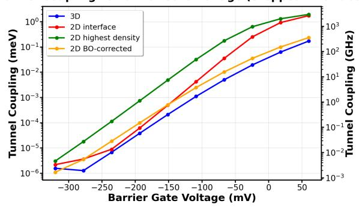
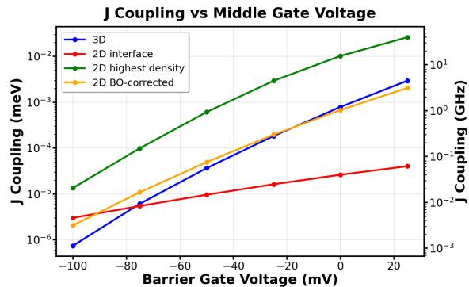
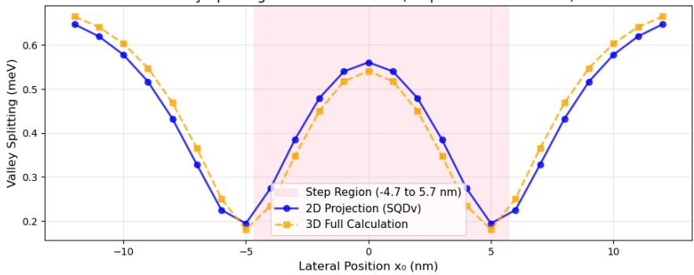

为什么需要严格降维
硅自旋比特的器件设计-仿真反馈环里，隧穿耦合 与交换相互作用 对微观细节（界面台阶、合金无序）极其敏感，必须数值求解。但三维网格上双电子问题要处理六维波函数，全面参数扫描不可行；文献中常用的捷径是取三维势在固定高度（界面处或最高电子密度处）的一个二维切片——这对光滑界面勉强够用，一旦界面粗糙度强烈调制垂直约束就会系统性失准（下文定量：台阶界面下误差一到两个量级）。有效二维包络函数理论给出的是带误差控制的替代：降维不是近似切片，而是可截断的严格展开。
理论框架分三层。最底层是广义包络函数（GEF）表述：剥掉 Bloch 函数的原子周期部分 、保留谷相位振荡 ，全部 Bloch 复杂度收进一个动量依赖的交叠核 ，能带用位于 （）的两个各向异性高斯之和建模以复现横向/纵向有效质量 、，实空间与动空间之间用 FFT 往返（复杂度 ）。
Born–Oppenheimer 投影
设哈密顿量可近似分离为面内与垂直部分
其中 只对 参数化依赖（不含面内导数）。在每个 处解垂直本征问题，用本征态 展开全波函数：
其中 是缓变包络。代回薛定谔方程、对 积分，得到一组耦合的二维方程
有效哈密顿量矩阵元含三类非绝热耦合系数（如 等），它们与分子物理中的 Born–Oppenheimer 非绝热耦合严格类比——保留全部垂直态时展开是精确的，实践上截断。
单面近似（电荷模型）：只保留垂直基态 ，非绝热项可忽略，得到
其中 是面内势（取三维势在固定高度的切片），关键修正是垂直基态能量 ——它在界面起伏处随台阶高度变化，正是朴素切片丢掉的物理。隧穿耦合与交换耦合由此读出：单电子体系 （最低两本征值之差的一半），双电子体系 。
双面近似（电荷 + 谷模型）：保留两个最低垂直态——硅中它们恰好是一对近简并谷态（更高激发被应变与界面抬开）。为避免界面无序导致的基组空间涨落，改用固定谷旋量基 （谷相关部分冻结、垂直包络仍随 变化），得到二维多谷哈密顿量
其中谷依赖部分为
这里 是局域谷基态能量， 是位置依赖的谷劈裂的一半， 是局域谷相位——谷相位与谷劈裂不再是外加参数，而是从垂直解中自然涌现的二维场，可直接扫描量子点位置研究其空间分布。
定量验证：三种界面、四套方法
基准器件是五栅双量子点（三柱塞 + 二约束栅，160×160×50 nm³ 计算域，界面台阶高度在 −0.5 到 +0.5 nm 间变化，Si/SiO₂ 导带错位 3 eV）。对比的四种方法：全三维、界面切片二维、最高密度切片二维（均丢弃 修正）、以及带 修正的 Born–Oppenheimer 二维。

台阶界面双量子点的隧穿耦合随势垒栅压变化：横轴势垒电压、纵轴 。全三维（蓝）与 BO 修正二维（橙）全程贴合（偏差不超过两倍），界面切片（红）多处偏差超过一个量级，最高密度切片（绿）最差时偏离两个量级——界面台阶改变局域垂直约束，切片法无法感知， 修正是恢复精度的关键。平界面对照组中切片法误差明显更小（约一个量级以内），说明粗糙度才是分水岭。图源：Binder et al. (2025)，Fig. 3 面板 (b)。
双电子交换耦合给出同样的排序：平界面下 BO 修正与三维全程吻合（偏差一般小于 50%），界面切片偏差一个量级以上；台阶界面下两种切片误差一到两个量级、界面切片连随栅压的变化趋势都无法重现，而 BO 修正依旧贴合。

台阶界面双量子点的交换耦合 随势垒栅压的指数式变化（横轴势垒电压、纵轴 ，对数刻度）：BO 修正二维（黄）与全三维（蓝）一致，切片法（红、绿）系统性偏离一到两个量级。 对波函数交叠指数敏感，是降维方案最严苛的试金石。图源：Binder et al. (2025)，Fig. 4 面板 (b)。
谷分辨基准用人工势（横向谐振 + 线性垂直约束 + 材料项）：原子级台阶（高度与过渡宽度均取硅相邻原子层间距 0.135 nm，用平滑 sigmoid 替代阶跃函数）与 SiGe 合金界面（Ge 原子随机采样， 时合金势强度 150 meV）。扫量子点位置 穿过台阶：谷相位呈幅度约 的系统性调制，谷劈裂在 0.15–0.7 meV 间互补变化，远离台阶处回到平界面文献值；二维投影与全三维定量一致。SiGe 合金界面下二维方法高保真复现谷劈裂、谷相位总体趋势一致（细粒度结构被平滑），且计算快得多。

量子点横向位置 扫过原子级台阶时的谷相位（上）与谷劈裂（下）：蓝圈为二维投影方法、橙点为全三维计算，粉色阴影标出台阶位置。谷相位呈现约 的系统性调制，谷劈裂相应在 0.15–0.7 meV 间变化；两种维度方案定量一致，说明固定谷旋量基完整保留了波函数层面的自旋谷结构——谷相位提取对波函数精度要求比能量计算更高。图源：Binder et al. (2025)，Fig. 5。
计算成本与适用条件
- 成本差：主导开销是 FFT 求动能算符（， 为网格点数）。单电子问题三维尚可行；双电子谷分辨三维计算内存需求超过 79 GB、运行时间超出实际限度，而所有二维投影方法分钟级完成且内存温和——这是把谷景观建模推向多量子点阵列与参数扫描的前提。
- 适用条件：要求哈密顿量近似可分离（垂直部分对面内坐标仅参数化依赖）且面内动能取横向质量 的标准形式；垂直约束远强于面内（硅量子点的常态）。谷模型另要求两个最低垂直态与其余激发之间有明显能隙（应变与界面通常保证）。
- 边界：自旋未纳入（原则上可用有效 g 因子补充）；谷相位细粒度结构在合金无序下会被二维方法部分平滑；单面近似完全丢弃谷物理，只在 足够大时可用于电荷问题。
与其他概念的关系
- 谷劈裂：本词条把谷劈裂与谷相位变成二维模型中自然涌现的局域场，可直接扫描台阶/合金界面上的空间分布（台阶两侧 相位跳变、劈裂 0.15–0.7 meV），与该词条的界面物理图像互补。
- 隧穿耦合： 是降维精度的第一块试金石；台阶界面下切片法的量级失效提醒：从电荷稳定图反推 时，仿真标定必须含垂直约束修正。
- 交换相互作用： 对波函数交叠指数敏感，是本方法目前精度上限（偏差 <50%）的度量，也是两比特门栅压标定仿真的直接输出。
- 半导体量子点与Si-MOS 量子点、Si/SiGe 异质结：验证器件横跨 Si/SiO₂ 台阶界面与 SiGe 合金界面，即两大主流硅平台的界面工程场景。
- 界面缺陷与谷劈裂外延剖面优化：二维多谷理论为界面无序（台阶、合金涨落）如何映射为谷参数涨落提供了快速正演模型，可用于剖面设计与良率统计的反演。
- 自动调控：分钟级的二维模型是闭环调参、参数扫描与阵列级仿真里替代全三维仿真的候选引擎。
参考文献
- Binder, C. W., Burkard, G., Fisher, A. J. Effective 2D Envelope Function Theory for Silicon Quantum Dots (2025). arXiv:2508.00139（QAtlas 缓存：2508.00139）。
完整文献库（含各篇站内全文页）见 参考文献库。